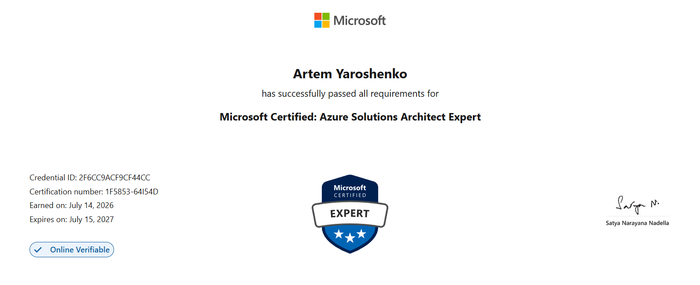
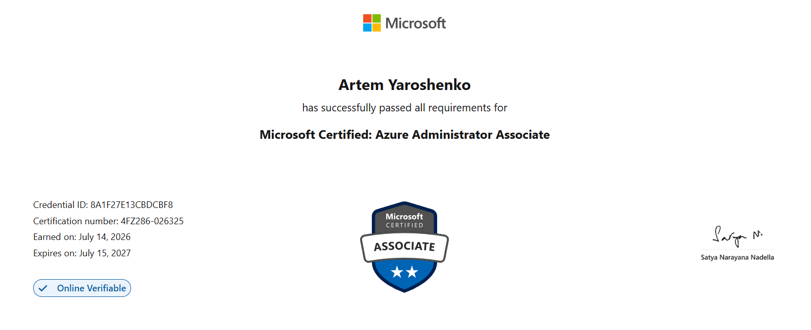
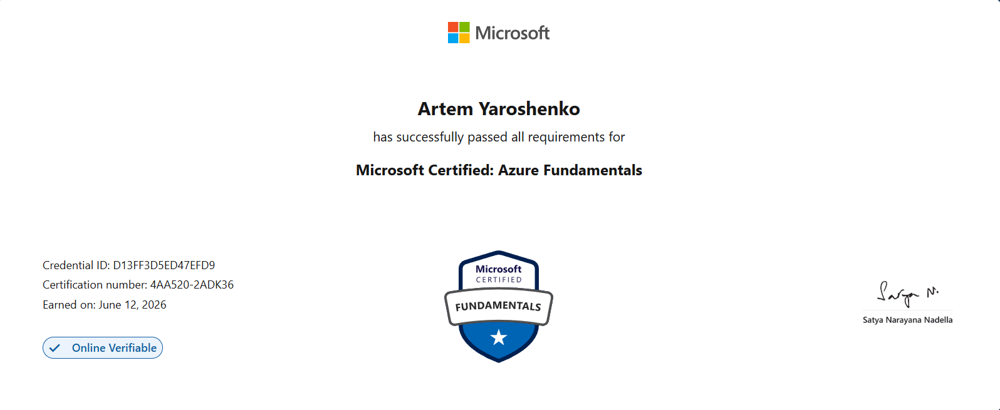

Microsoft Certified · AZ-305 · Expert
Azure Solutions Architect Expert
Designing cloud solutions across architecture, identity, networking, security and governance.
Verify credentialArchitecture, cloud operations and the platform behind the applications I build.

Designing cloud solutions across architecture, identity, networking, security and governance.
Verify credential
Managing Azure infrastructure, compute, storage, networking, identity and monitoring.
Verify credential
A foundation in Azure services, cloud architecture, security and governance.
Verify credentialFrom architecture
to production.
.NET · Angular · React · Azure
I’m a full-stack engineer and technical lead working across enterprise applications, cloud architecture and practical AI. My experience spans logistics, finance, booking and workforce management for clients in the US and Europe.
I take ownership from architecture and technology choices to implementation, integrations and delivery. I also mentor engineers, review solutions and help teams turn complex requirements into software that works.
Cloud services, APIs and interfaces designed as a connected system.
Clear decisions, thoughtful reviews and shared engineering knowledge.
The technologies I use and the problems I solve with them.
Enterprise applications built from the interface to the services behind it.
Distributed systems, asynchronous workflows and infrastructure that supports delivery.
Reliable APIs, background processing and data access tuned for real business workflows.
Assistants grounded in business data, with practical tools for analysis and discovery.
Selected responsibilities and outcomes across enterprise platforms.
May 2024 — Present
Leading the design and delivery of a logistics platform, from system architecture to Angular applications and .NET services on Azure.
Apr 2022 — May 2024
Built a multi-tenant platform for offices, cafés and parking, with real-time reservations and calendar synchronization.
Jan 2019 — Apr 2022
Developed a business platform supporting employee management, payroll, bookings, invoicing and online payments.
Let’s talk about full-stack engineering, cloud platforms and useful AI.
artem.yaroshenko0513@gmail.com